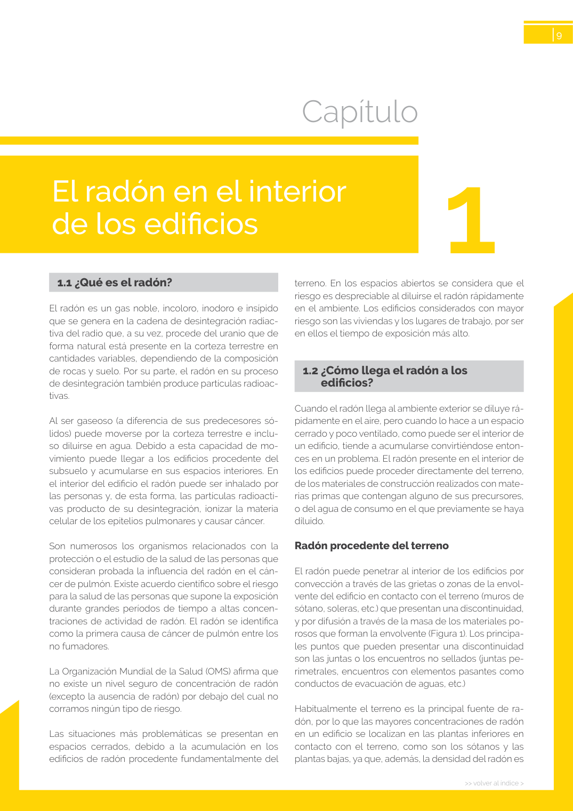

GUIA · Capítulo El radón en el interior · versión sin-fecha · capa guia
Formatos: JSON compacto · Markdown · PDF fuente
Ámbito del documento · texto del ámbito · documento y tablas
Tipo: tablas, figuras · nivel 1 · sección estimada: Capítulo El radón en el interior · padre:
Capítulo El radón en el interior El radón en el interior

PDF fuente redistribuible: copia fiel enlazada en esta página (SHA256 verificado).